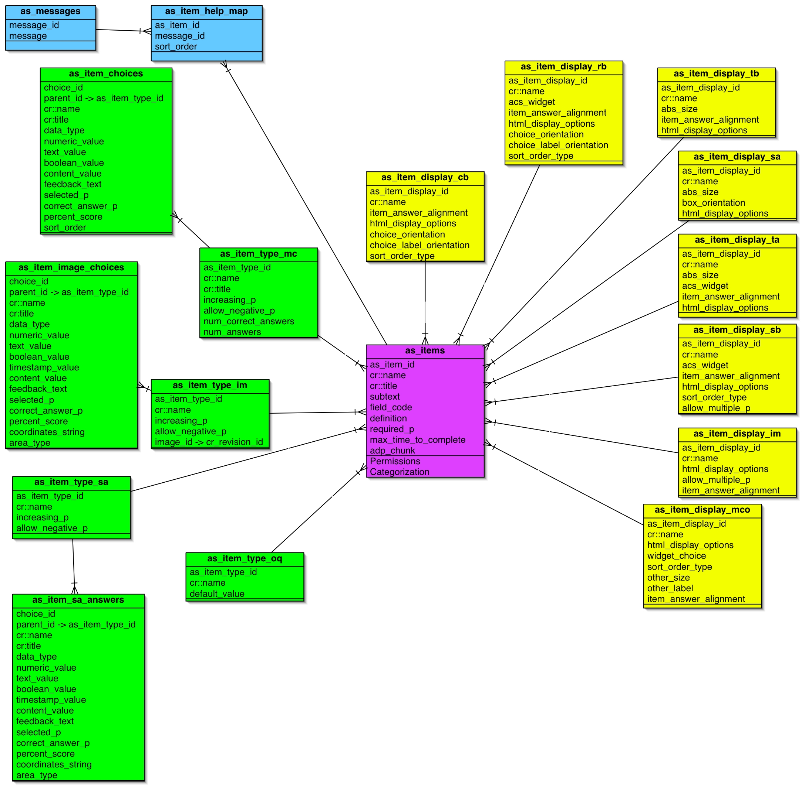

Overview
The As_Item and Section catalogues are central parts of the
assessment
system. These repositories support reuse of Assessment components by
storing of the various as_items (or questions if you like) and groups
of as_items (ie Sections) that can be used in an assessment. You are
able to
add/edit/delete an as_item of a certain type to a certain scope.
Furthermore it allows you to search and browse for questions for
inclusion in your assesment as well as import and export multiple
questions using various formats.
In this description here we will only discuss the design
implications for as_items. Green colored tables have to be
internationlized.
Each as_item consists of a specific as_item Type like "Multiple
Choice
Question" or "Free Text". Each as_item Type
adds additional Attributes to the as_item, thereby making it pretty
flexible. Additionally each as_item has a related display type
storing information on how to display this as_item. This way we can
create
an adp-snippet which we can include to display a certain as_item (the
snippet is stored de-normalized in the as_items table and update on
every change to the as_item or the as_item_type).
How is this achieved concretely? Each as_item Type has it's own
table with attributes useful for this as_item type. All tables
(as_items, as_item_type_*, as_item_display_*) are controlled by the
content repository. Each as_item is linked using acs-relationships to
the specific items of the as_item_type_* and as_item_display_*
tables. Each as_item can only be linked to one as_item_type instance
and one as_item_display instance.
Categorization and internationalization will make it into
OpenACS 5.2, therefore we are not dealing with it in Assessment
seperately but use the (to be) built in functionality of OpenACS 5.2
Additionally we have support functionality for an as_item. This
includes
the help functionality. To give Assessment authors flexibility in
adapting as_item defaults, help messages, etc for use in different
Assessments, we abstract out a number of attributes from as_as_items
into
mapping tables where "override" values for these attributes can
optionally be set by authors. If they choose not to set overrides, then
the values originally created in the as_item supercede.
Seperately we will deal with Checks on as_items. These will allow
us to make checks on the input (is the value given by the user actually
a valid value??), branches (if we display this as_item, which responses
have to have been given) and post-input checks (how many points does
this answer give).
Here is the graphical schema for the as_item-related subsystems,
including the as_item Display subsystem described here.

Core Function: as_items
Item Display Types
Each item has an item_display_type object associated with it, that
defines how to display the item. Each item_display_type has a couple of
attributes, that can be passed to the formbuilder for the creation of
the widget. Each widget has at least one item_display_type associated
with it. In the long run I think this system has the potential to
become a part of OpenACS itself (storing additional display information
for each acs_object), but we are not there yet :). Obviouslly we are
talking cr_item_types here as well.
Each item_display_type has a couple of attributes in common.
- item_display_id
- cr::name - name like "Select box, aligned right", stored in the
name field of CR.
- acs_widget - the type of "widget" displayed when the
Item is output in html. There are many types we should support beyond
the stock html types. We are talking ACS
Templating widgets here.
- item_answer_alignment - the orientation between the
"question part" of the Item (the item_text/item_subtext) and the
"answer part" -- the native Item widget (eg the textbox) or the 1..n
choices. Alternatives accommodate L->R and R->L alphabets (or is
this handled automagically be Internationalization?) and include:
- beside_left - the "answers" are left of the "question"
- beside_right - the "answers" are right of the "question"
- below - the "answers" are below the "question"
- above - the "answers" are above the "question"
- html_display_options - field to specify other stuff like
textarea dimensions ("rows=10 cols=50" eg)
Depending on the presentation_types additonal
attributes (presentation_type attributes)
come into play (are added as attributes to the CR item type) (mark:
this is not feature complete. It really is up to the coder to decide
what attributes each widget should have, down here are only
*suggestions*). Additionally we're not mentioning all HTML
possibilities associated with each type (e.g. a textarea has width and
heigth..) as these can be parsed in via the html_display_options.
- textbox - single-line typed entry
- abs_size - An abstraction of the real size value in
"small","medium","large". Up to the developer how this translates.
- text area - multiple-line typed entry
- abs_size - An abstraction of the real size value in
"small","medium","large". Up to the developer how this translates.
- radiobutton (as_item_display_rb) - single-choice multiple-option
- choice_orientation - the pattern by which 2..n Item Choices
are
laid out when displayed. Note that this isn't a purely stylistic issue
better left to the .adp templates or css; the patterns have semantic
implications that the Assessment author appropriately should control
here. Note also that Items with no Choices (eg a simple textbox Item)
has no choice_orientation, but handles the location of that textbox
relative to the Item label by the item_alignment option (discussed
below).
- horizontal - all Choices are in one line
- vertical - all Choices are in one column
- choice_label_orientation - how shall the label be positioned
in relation to the choice (top, left, right, buttom).
- button_type - type of button to use
- sort_order: Numerical, alphabetic, randomized or
by order of entry (sort_order field).
- checkbox - multiple-choice multiple-option
- choice_orientation (see above)
- choice_label_orientation
- allow_multiple_p - Is it allow to select multiple values ?
- sort_order: Numerical, alphabetic, randomized or
by order of entry (sort_order field).
- select (as_item_display_sb) - multiple-option displayed in
"popup menu" (select box)
- sort_order: Numerical, alphabetic, randomized or
by order of entry (sort_order field).
- allow_multiple_p - Is
it allow to select multiple values ?
- multiple-choice-other: Consider, for instance, a combo box
that consists of a radiobutton plus a textbox -- used for instance when
you need a check "other" and then fill in what that "other" datum is.
In effect this is a single Item but it has two different forms: a
radiobutton and a textbox.
- other_size: size of the other text field.
- other_label: label (instead of "other").
- display_type: What display type should be used for the
multiple-choice-part ?
- pop-up_date - a widget with month-day-year select elements
that resets the day element based on year and month (ie include Feb 29
during leap years -- via Javascript) and tests for valid dates
- typed_date - similar to pop-up_date but month-day-year
elements are textboxes for all-keyboard entry; needs no resetting
scripts but does need date validity check
- image_map - requires a linked image; the image map coordinates
are handled as Item Choices
- file_upload - present a File box (browse button, file_name
textbox, and submit button together) so user can upload a file
Help System
The help system should allow a small "?" appear
next to an object's title that has a help text identified with it. Help
texts are to be displayed in the nice bar that Lars created for OpenACS
in the header. Each object can have multiple help texts associated with
it (which will be displayed in sort order with each hit to the "?".)
and we can reuse the help text, making this an n:m relationship (using
cr_rels). E.g. you might want to have a default help text for certain
cr_as_item_types, that's why I was thinking about reuse...
Relationship attributes:
- as_item_id
- message_id - references as_messages
- sort_order (in which order do the messages appear)
Messages (as_messages) abstracts out help messages (and other
types of messages) for use in this package. Attributes include:
- message_id
- message
- locale (Actually I hope the i18n system Joel proposed makes this
obsolete).